|
Communication - OFDM Home : www.sharetechnote.com |
|
Overview
OFDM stands for Orthogonal Frequency Divisition Multiplexing. If you understand the meaning of following keywords, you would have pretty good big picfure of OFDM.
You will figure out what all these terms are about as you go through this page. OFDM is a technology that we split a wide frequency band into many small frequencies (we call this split frequencies as subcarriers) and carry data onto each of these sub carriers as illustrated below. In other words, we 'devide a wide frequency band' into multiple small/narrow frequencies. This is the meaning of 'Frequency Division'. Since all the data on each of these subcarriers are transmitted simultaneously, we can say this is a kind of 'Multiplexing'.
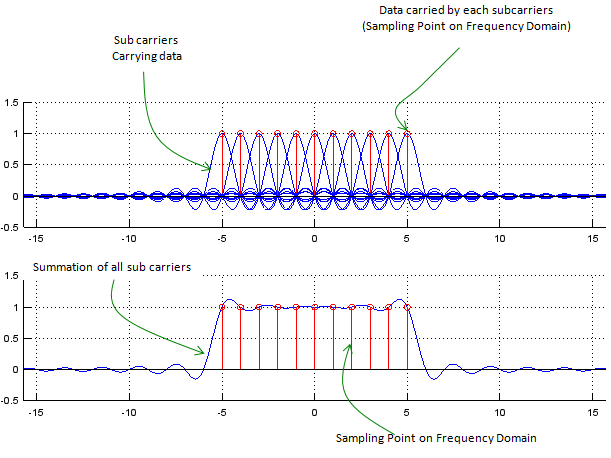
Now you may have a question at this point. How small we can make it for each subcarrier (subcarrier, divided frequency) ? For example, if you are given 1 Mhz bandwidth as a fullband, how many subcarriers we are supposed to split into ? If you split it into 1000 sub carriers with 1 Khz interval and carry one bit on each sub carrier, you can transmit 1000 bits simultaneously. If you split it into 100 sub carriers with 10 Khz interval and carry one bit on each sub carrier, you can transmit 100 bits at a time. Which option you would take ? Definately you would want to split it into 1000 sub carriers.. you would even say I want to split it into even more sub carriers. But unfortunately it would not be possible to split it with too small intervals between sub carriers. If you split it into too many sub carriers with too small space between sub carriers, there would be much high possibility of interference between adjacent sub carriers. However, if you separate each subcarrier too much and have small number of sub carriers, you would have much less interference between sub carriers but in that case the data rate would be decreased. As a kind of optimal solution, OFDM split the band into multiple sub carriers in such a way as shown below. In the following illustration, at each sampling point in frequency domain there is only one carrier which has non-zero value and all other sub carriers has zero value at the sampling point. It means that even though there are multiple sub carriers are coexists they are all independent and does not influence others, this characteristics are called as 'Orthogonal'. ( If any two functions or vectors are orthogonal, it means that they are linear independent to each other. You can find the mathematical definition of Orthogonality from WiKi, but it would not be easy to figure out practical meaning of Orthogonality from it.)
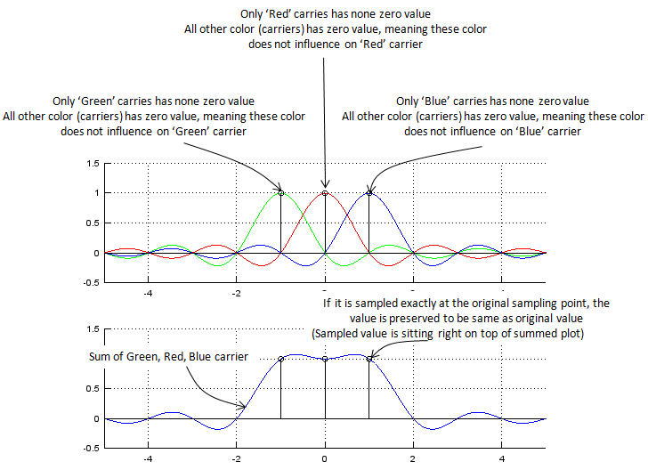
OFDM is very good method of utilizing the given frequency wisely, but there is a drawback to this method. For this method to work efficiently the space between sub carriers should be maintained exactly at the specified position which satisfy the condition of orthogonality. What if the space between sub carriers are not maintained accurately and they are drifting around. One example for this case is shown below. You would not see much differences when each sub carriers are plotted separately (upper plot), but you would notice the differences when all of these sub carriers are summed together as shown on lower plot. Unfortunately, in reality there is no such an environment in which there is no frequency drift. so when you design an OFDM, first you have to determine the frequency space in which the system can tolerate the signal distortion due to frequency drift of sub carriers. (Most common sources to cause frequency drift of sub carriers would be 'Fading' and 'Doppler effect').
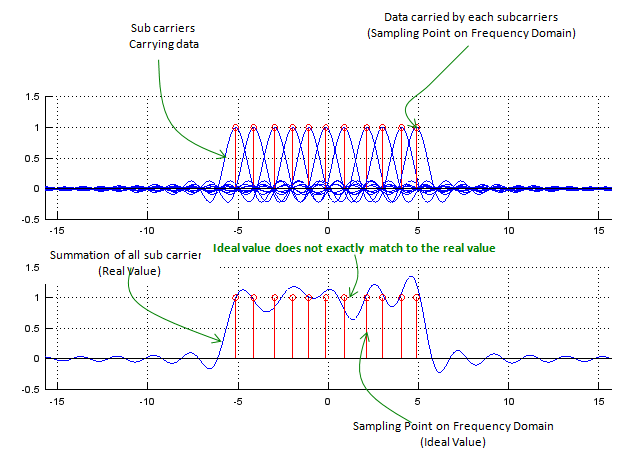
To give you some toy to play with the concept of OFDM and the effect of frequency drift, I put the Matlab/Octave source code that I used to create plots shown above. Try with different values for NoOfCarriers and fnoiseMax and see how the result get different.
NoOfCarriers = 11; % Put an Odd Number f = -5*pi:pi/50:5*pi; fnoiseMax = 0.3;
iMin = -(NoOfCarriers-1)/2; iMax = (NoOfCarriers-1)/2; csum = zeros(1,length(f));
close all; fList = []; cList = []; subplot(2,1,1); hold on; for i=iMin:1:iMax, fnoise = fnoiseMax*(rand()-0.5); fshift = (i .* (1/pi) .* pi) .+ fnoise; c = sinc(f .- fshift); csum = csum + c; fList = [fList,fshift]; cList = [cList,max(c)]; plot(f,c);axis([min(f),max(f),-0.5,1.5]); stem((i * (1/pi) * pi) + fnoise,1,'r-'); end; grid(); hold off;
subplot(2,1,2); hold on; plot(f,csum);grid();axis([min(f),max(f),-0.5,1.5]); stem(fList,cList,'r-'); hold off;
Cyclic Prefix
Now let's look at the signal in time domain. Following is an illustraion showing two OFDM symbols in sequence.
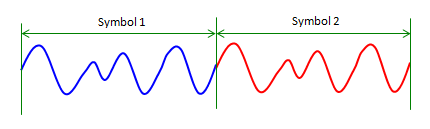
In ideal case, there is no problem with this signal, but what would happen if the first symbol get delayed a little bit. In this case, the ending part of the first symbol will spill over into the following symbol time and interfere the next symbol as shown below. This kind of interference between different symbols are called 'Inter Symbol Interference (ISI)'.
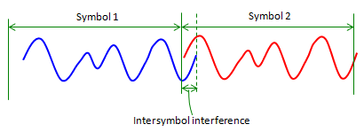
What would be the solution to handle this problem ? You may want to prevent the signal from getting delayed. But it is not possible because we have no control over the radio channel. So the only way is to design our system to handle this kind of situation. One simple solution is to put some time gap between symbols so that one symbol would not spill into next symbol even when it get delayed.
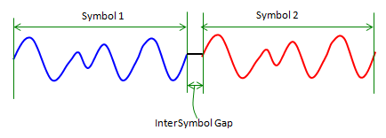
With this gap, the system would tolerate delay and intersymbol interference issue to a certain degree, but there is a practical issue. The issue is 'what to put in this gap ?'. Would it be good to put nothing (like turning off transmission) ? If you completely turn off the signal during the gap, it would cause issues for amplifier. To reduce this issue, we copy a part of signal from the end and paste it into this gap. This copied portion prepended at the beginning is called 'Cyclic Prefix'.
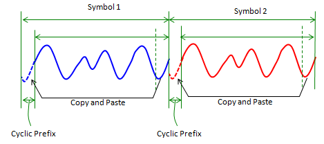
As I explained, main purpose of cyclic prefix is to reduce ISI(Inter Symbol Interference), but we can enjoy an extra advatage from generating the cyclic prefix by copying the ending part of the original symbol. It helps find the symbol boundary (the start and end of a symbol). It goes like this. Take a sequence of samples (window) with the length of cyclic prefix. Take out another sequence with the same length which is (symbol length - CP length) apart from the first sequence. And then calculate the correlation of the two sequence. If the two sequence is exactly aligned with the start and end of the symbol, the correlation would be very high because the contents within the two sequence would be almost the same.
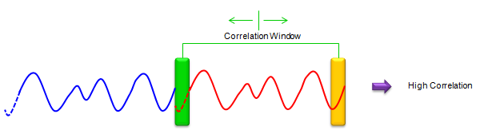
If the two sequence (two window) does not align with the symbol boundary (start and end of a symbol), the correlation would not be high as shown below.
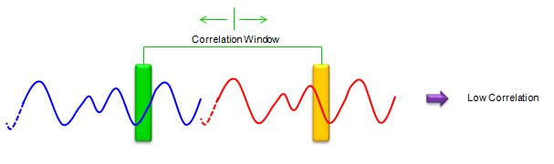
If you slide these two windows up and down and find the location which give you the highest correlaction, that is the slot boundary.
Example
I hope you have got the general idea on how OFDM works from previous section, but it is only a conceptual description and there would be some gap to fill in terms of details between the concept and real implementation. Let me give you an example that would give you more concrete idea than the previous concept. Overall idea for this example is based on IEEE 802.11 (WLAN specification) but this example is also missing pretty much details. However, it would give you more concrete idea about OFDM implementation.
Let's assume that you are given an OFDM specification as follows. (In most case, specification would not be given in the form of illustration like this, but it would be helpful (I am recommending) to describe the specification in graphical form.
In OFDM implemetation, the frequence at exact center does not carry any subcarrier and there are a certain number of sub carriers at both ends of the spectrum which does not have any sub carriers. This regions are called as Guard band and this is mainly to reduce the interference with neighbouring band.
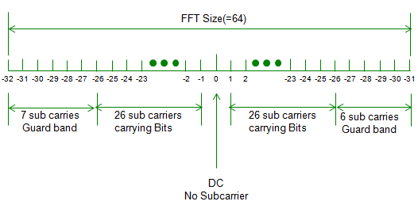
Now let's follow the steps to implement an OFDM signal from the bit data we want to send. For simplicity, the modulation we are using is BPSK which carries one bit per each constellation point. According to the given specification, out of 64 sub carriers allocated for the band only 52 sub carriers are the sub carriers which can carry data bits as shown below.
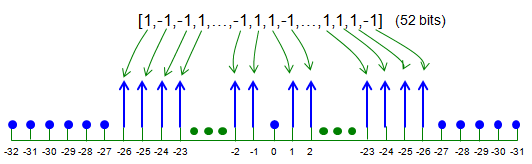
For this step, first we have to generate a bit sequence which will be carried by one OFDM symbol. You can generate a random bit sequence as following way. (In real communication, nobody would use random data to transmit. If it is real communication, this data would be a document file, music or movie etc but in case of simulation, we normaly use random data).
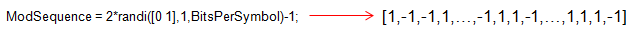
Next step is to map the user data to each of sub carriers which is assigned for data carry. This can be implemented as follows. (At first look, this would not be clear to you unless you are very familiar to Matlab/Octave array manipulation. You may use for loops to do this, but following way would be much simpler).
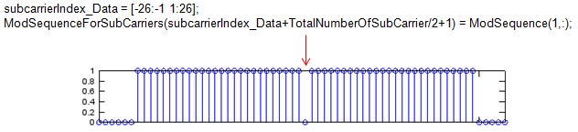
With procedure described above, we have bit stream allocated to sub carrier in frequency domain. But all the communication (data transmission and reception) is happening in time domain. So we have to convert the frequency domain data into a time domain sequence as shown below. You would already know that IFFT (Inverse Fast Fourier Transform) is the tool to convert a frequency domain data into a time domain data.
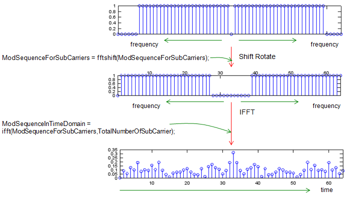
Next step is to add Cyclic Prefix to the time domain data we got in previous step. Cyclic prefix generation is very straightforward, it is direct copy of some portion of data from the end and putting the copy at the beginning of the data sequence. (What is Cyclic Prefix ? Why we need this ? I will explain on Cyclic Prefix sometime later in a separate section).
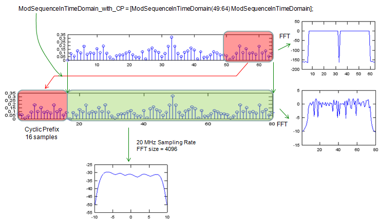
Following is the Matlab/Octave code to implement all the steps described above.
TotalNumberOfSubCarrier = 64; % for each symbol bits a1 to a52 are assigned to subcarrier % index [-26 to -1 1 to 26] subcarrierIndex_Data = [-26:-1 1:26]; BitsPerSymbol = 52;
close all; figure;
% BPSK modulation ModSequence = 2*randi([0 1],1,BitsPerSymbol)-1; subplot(6,1,1); stem(abs(ModSequence));xlim([1 length(ModSequence)]);
TimeDomainSequence = []; % empty vector
ModSequenceForSubCarriers = zeros(1,TotalNumberOfSubCarrier);
% assigning bits a1 to a52 to subcarriers [-26 to -1, 1 to 26] ModSequenceForSubCarriers(subcarrierIndex_Data+TotalNumberOfSubCarrier/2+1) = ModSequence(1,:); subplot(6,1,2); stem(abs(ModSequenceForSubCarriers));xlim([1 length(ModSequenceForSubCarriers)]);
% shift subcarriers at indices [-26 to -1] to fft input indices [38 to 63] ModSequenceForSubCarriers = fftshift(ModSequenceForSubCarriers); subplot(6,1,3); stem(abs(ModSequenceForSubCarriers));xlim([1 length(ModSequenceForSubCarriers)]);
ModSequenceInTimeDomain = ifft(ModSequenceForSubCarriers,TotalNumberOfSubCarrier); subplot(6,1,4); stem(abs(ModSequenceInTimeDomain));xlim([1 length(ModSequenceInTimeDomain)]);
% adding cyclic prefix of 16 samples ModSequenceInTimeDomain_with_CP = [ModSequenceInTimeDomain(49:64) ModSequenceInTimeDomain]; subplot(6,1,5); stem(abs(ModSequenceInTimeDomain_with_CP)); xlim([1 length(ModSequenceInTimeDomain_with_CP)]);
TimeDomainSequence = [TimeDomainSequence ModSequenceInTimeDomain_with_CP]; subplot(6,1,6); stem(abs(TimeDomainSequence));xlim([1 length(TimeDomainSequence)]);
figure; SamplingRate = 20; [PowerSpectrum,W] = pwelch(TimeDomainSequence,[],[],4096,20); subplot(1,3,1);plot([-2048:2047]*SamplingRate/4096,10*log10(fftshift(PowerSpectrum))); xlabel('frequency, MHz') ylabel('power spectral density') subplot(1,3,2);plot(10*log10(fftshift(abs(fft(ModSequenceInTimeDomain))))); xlim([1 length(ModSequenceInTimeDomain)]); subplot(1,3,3);plot(10*log10(fftshift(abs(fft(TimeDomainSequence))))); xlim([1 length(TimeDomainSequence)]);
|